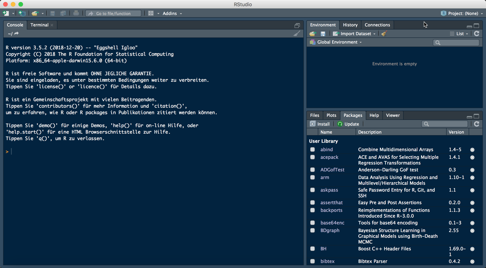
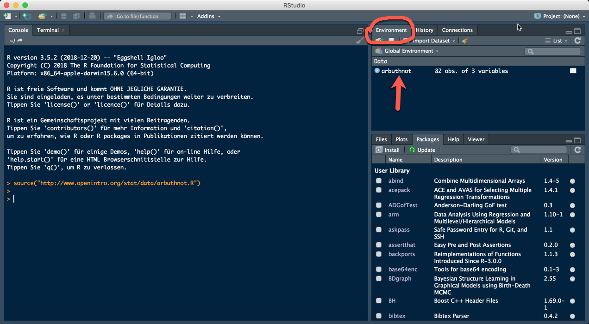
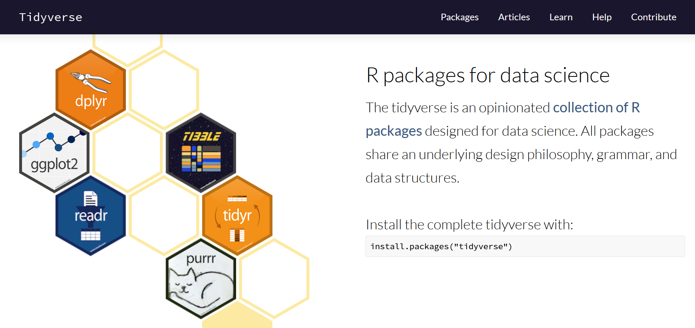

The goal of this lab is to introduce you to R and RStudio, which you’ll be using throughout the course both to learn the statistical concepts discussed in the texbook and also to analyze real data and come to informed conclusions. To straighten out which is which: R is the name of the programming language itself and RStudio is a convenient interface.
As the labs progress, you are encouraged to explore beyond what the labs dictate; a willingness to experiment will make you a much better programmer. Before we get to that stage, however, you need to build some basic fluency in R. Today we begin with the fundamental building blocks of R and RStudio: the interface, reading in data, and basic commands.

The panel in the upper right contains your workspace as well as a history of the commands that you’ve previously entered. Any plots that you generate will show up in the panel in the lower right corner.
The panel on the left is where the action happens. It’s called the console. Everytime you launch RStudio, it will have the same text at the top of the console telling you the version of R that you’re running. Below that information is the prompt. As its name suggests, this prompt is really a request, a request for a command. Initially, interacting with R is all about typing commands and interpreting the output. These commands and their syntax have evolved over decades (literally) and now provide what many users feel is a fairly natural way to access data and organize, describe, and invoke statistical computations.
To get you started, enter the following command at the R prompt (i.e. right after > on the console). You can either type it in manually or copy and paste it from this document.
source("http://www.openintro.org/stat/data/arbuthnot.R")This command instructs R to access the OpenIntro website and fetch some data: the Arbuthnot baptism counts for boys and girls. You should see that the workspace area in the upper righthand corner of the RStudio window now lists a data set called arbuthnot that has 82 observations on 3 variables. As you interact with R, you will create a series of objects. Sometimes you load them as we have done here, and sometimes you create them yourself as the byproduct of a computation or some analysis you have performed. Note that because you are accessing data from the web, this command (and the entire assignment) will work in a computer lab, in the library, or in your dorm room; anywhere you have access to the Internet.
The Arbuthnot data set refers to Dr. John Arbuthnot, an 18th century physician, writer, and mathematician. He was interested in the ratio of newborn boys to newborn girls, so he gathered the baptism records for children born in London for every year from 1629 to 1710. We can take a look at the data by typing its name into the console.
arbuthnotWhat you should see are four columns of numbers, each row representing a different year: the first entry in each row is simply the row number (an index we can use to access the data from individual years if we want), the second is the year, and the third and fourth are the numbers of boys and girls baptized that year, respectively. Use the scrollbar on the right side of the console window to examine the complete data set.
Note that the row numbers in the first column are not part of Arbuthnot’s data. R adds them as part of its printout to help you make visual comparisons. You can think of them as the index that you see on the left side of a spreadsheet. In fact, the comparison to a spreadsheet will generally be helpful. R has stored Arbuthnot’s data in a kind of spreadsheet or table called a data frame.
You can see the dimensions of this data frame by typing:
dim(arbuthnot)## [1] 82 3This command should output [1] 82 3, indicating that there are 82 rows and 3 columns (we’ll get to what the [1] means in a bit), just as it says next to the object in your workspace. You can see the names of these columns (or variables) by typing:
names(arbuthnot)## [1] "year" "boys" "girls"You should see that the data frame contains the columns year, boys, and girls. At this point, you might notice that many of the commands in R look a lot like functions from math class; that is, invoking R commands means supplying a function with some number of arguments. The dim and names commands, for example, each took a single argument, the name of a data frame.
One advantage of RStudio is that it comes with a built-in data viewer. Click on the name arbuthnot in the Environment pane (upper right window) that lists the objects in your workspace.

This will bring up an alternative display of the data set in the Data Viewer (upper left window). You can close the data viewer by clicking on the x in the upper lefthand corner.
Let’s start to examine the data a little more closely. We can access the data in a single column of a data frame separately using a command like
arbuthnot$boys## [1] 5218 4858 4422 4994 5158 5035 5106 4917 4703 5359 5366 5518 5470 5460
## [15] 4793 4107 4047 3768 3796 3363 3079 2890 3231 3220 3196 3441 3655 3668
## [29] 3396 3157 3209 3724 4748 5216 5411 6041 5114 4678 5616 6073 6506 6278
## [43] 6449 6443 6073 6113 6058 6552 6423 6568 6247 6548 6822 6909 7577 7575
## [57] 7484 7575 7737 7487 7604 7909 7662 7602 7676 6985 7263 7632 8062 8426
## [71] 7911 7578 8102 8031 7765 6113 8366 7952 8379 8239 7840 7640This command shows the number of boys baptized each year.
What command would you use to extract just the counts of girls baptized? Try it!
source("http://www.openintro.org/stat/data/arbuthnot.R")arbuthnot$girlsNotice that the way R has printed these data is different. When we looked at the complete data frame, we saw 82 rows, one on each line of the display. These data are no longer structured in a table with other variables, so they are displayed one right after another. Objects that print out in this way are called vectors; they represent a set of numbers. R has added numbers in [brackets] along the left side of the printout to indicate locations within the vector. For example, 5218 follows [1], indicating that 5218 is the first entry in the vector. And if [43] starts a line, then that would mean the first number on that line would represent the 43rd entry in the vector.
R has some powerful functions for making graphics. In this course we will not use the base R graphics functions. Instead we will work with the ggplot2 package, which is part of the tidyverse

The tidyverse is a collection of packages, but you can install it like any other package by running the command
install.packages("tidyverse")After loading the package
library(tidyverse)we can create a simple scatterplot of the number of girls baptized per year with the command
ggplot(data = arbuthnot, mapping = aes(x = year, y = girls)) + geom_point()The command above consists of two parts. ggplot() initalies the graphic and sets some global aesthetics with aes(). The x and y aesthetic are defined to be year and girls (from the arbuthnotdata set), respectively. geom_poin() then adds another layer to the graphic. In this case points are added to the plot.
If we wanted to connect the data points with lines, we could use another geom_xx() function.
ggplot(data = arbuthnot, mapping = aes(x = year, y = girls)) + geom_line(colour = "blue")For a list of all available geoms, see https://ggplot2.tidyverse.org/reference/. In the last command we also chose a different colour. Of course, it’s not obvious how to do this. But fortunately the help files, try
?geom_linemost often provide enough guidance. In this e.g. we find in the section Aesthetics of the help file that geom_line() understands the aesthetic colour and in the fourth example we find an application of using colour just as we did.
Now, suppose we want to plot the total number of baptisms. To compute this, we could use the fact that R is really just a big calculator. We can type in mathematical expressions like
5218 + 4683to see the total number of baptisms in 1629. We could repeat this once for each year, but there is a faster way. If we add the vector for baptisms for boys and girls, R will compute all sums simultaneously.
arbuthnot$boys + arbuthnot$girls## [1] 9901 9315 8524 9584 9997 9855 10034 9522 9160 10311 10150
## [12] 10850 10670 10370 9410 8104 7966 7163 7332 6544 5825 5612
## [23] 6071 6128 6155 6620 7004 7050 6685 6170 5990 6971 8855
## [34] 10019 10292 11722 9972 8997 10938 11633 12335 11997 12510 12563
## [45] 11895 11851 11775 12399 12626 12601 12288 12847 13355 13653 14735
## [56] 14702 14730 14694 14951 14588 14771 15211 15054 14918 15159 13632
## [67] 13976 14861 15829 16052 15363 14639 15616 15687 15448 11851 16145
## [78] 15369 16066 15862 15220 14928This command leads to 82 numbers (in that packed display, because we aren’t looking at a data frame here), each one representing the sum we’re after. Take a look at a few of them and verify that they are right. Now we can also make a plot of the total number of baptisms per year with the command
ggplot(arbuthnot, aes(x = year, y = boys + girls)) + geom_line()This time, note that we left out the names of the first two arguments of ggplot(). We can do this because the help file shows that the default for ggplot() is for the first argument to be the data argument and the second argument to be mapping.
Similarly to how we computed the total number of boys and girls, we can compute the ratio of the number of boys to the number of girls baptized in 1629 with
5218 / 4683## [1] 1.114243Compute the ratio of the number of boys to the number of girls baptized for all years
source("http://www.openintro.org/stat/data/arbuthnot.R")arbuthnot$boys / arbuthnot$girlsThe proportion of newborns in 1629 that are boys was equal to
5218 / (5218 + 4683)Note that with R as with your calculator, you need to be conscious of the order of operations. Here, we want to divide the number of boys by the total number of newborns, so we have to use parentheses. Without them, R will first do the division, then the addition, giving you something that is not a proportion.
Make a scatterplot of the proportion of newborns that are boys over time.
library(ggplot2)ggplot(arbuthnot, aes(x = year, y = boys / (boys + girls))) + geom_point()What do you see?
Finally, in addition to simple mathematical operators like subtraction and division, you can ask R to make comparisons like greater than, >, less than, <, and equality, ==. For example, we can ask if boys outnumber girls in each year with the expression
arbuthnot$boys > arbuthnot$girls## [1] TRUE TRUE TRUE TRUE TRUE TRUE TRUE TRUE TRUE TRUE TRUE TRUE TRUE TRUE
## [15] TRUE TRUE TRUE TRUE TRUE TRUE TRUE TRUE TRUE TRUE TRUE TRUE TRUE TRUE
## [29] TRUE TRUE TRUE TRUE TRUE TRUE TRUE TRUE TRUE TRUE TRUE TRUE TRUE TRUE
## [43] TRUE TRUE TRUE TRUE TRUE TRUE TRUE TRUE TRUE TRUE TRUE TRUE TRUE TRUE
## [57] TRUE TRUE TRUE TRUE TRUE TRUE TRUE TRUE TRUE TRUE TRUE TRUE TRUE TRUE
## [71] TRUE TRUE TRUE TRUE TRUE TRUE TRUE TRUE TRUE TRUE TRUE TRUEWe receive 82 return values of either TRUE if that year had more boys than girls, or FALSE if that year did not (the answer may surprise you). This output shows a different kind of data than we have considered so far. In the arbuthnot data frame our values are numerical (the year, the number of boys and girls). Here, we’ve asked R to create logical data, data where the values are either TRUE or FALSE. In general, data analysis will involve many different kinds of data types, and one reason for using R is that it is able to represent and compute with many of them.
This seems like a fair bit for your first lab, so let’s stop here with new stuff and repeat what you have just learned.
In the previous few pages, you recreated some of the displays and preliminary analysis of Arbuthnot’s baptism data. Your assignment involves repeating these steps, but for present day birth records in the United States. Start RStudio and load up the present day data with the following command.
source("http://www.openintro.org/stat/data/present.R")The data are stored in a data frame called present.
What years are included in this data set? What are the dimensions of the data frame and what are the variable or column names?
How do these counts compare to Arbuthnot’s? Are they on a similar scale?
Make a plot that displays the boy-to-girl ratio for every year in the data set. What do you see? Does Arbuthnot’s observation about boys being born in greater proportion than girls hold up in the U.S.? Include the plot in your response.
In what year did we see the most total number of births in the U.S.?
Remark: Don’t forget to load the tidyverse if you want to produce graphics using ggplot2.
That was a short introduction to R and RStudio, but we will provide you with more functions and a more complete sense of the language as the course progresses. Feel free to browse around the websites for R and RStudio if you’re interested in learning more, or find more labs for practice at http://openintro.org.
This tutorial is released under a Creative Commons Attribution-ShareAlike 3.0 Unported. This lab was adapted from an OpenIntro R Lab by Andrew Bray and Mine Çetinkaya-Rundel.